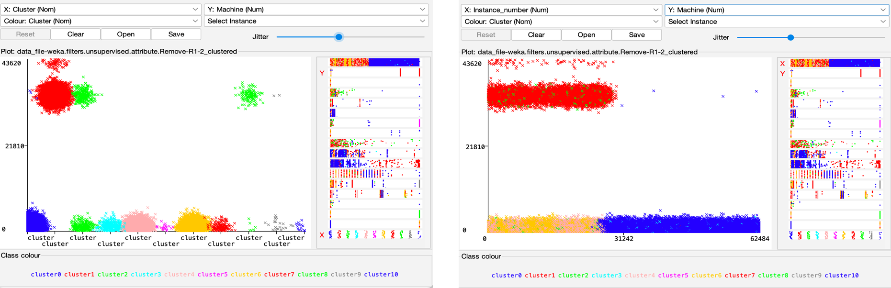
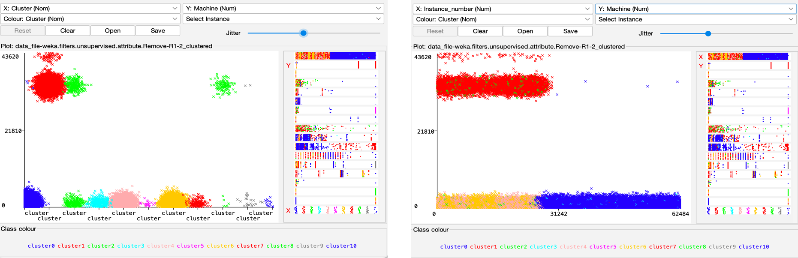

Unsupervised Clustering of Ransomware
Identify common features of ransomware using clustering so that they can be used to identify newer ransomware that exhibit similar features.
This section displays the visualization of data based on the analytical approaches used on the data sources relevant to the hospital industry
Identify common features of ransomware using clustering so that they can be used to identify newer ransomware that exhibit similar features.
We used supervised machine learning technique to create a model that can classify a website as a phishing website or a benign website.
Identify Common Platform Enumerations (CPEs) for devices used in hospital industry using Shodan and then search for vulnerabilities impacting CPEs using National Vulnerability Database (NVD).